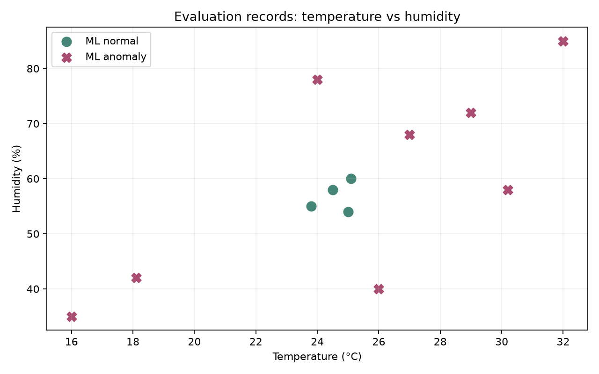
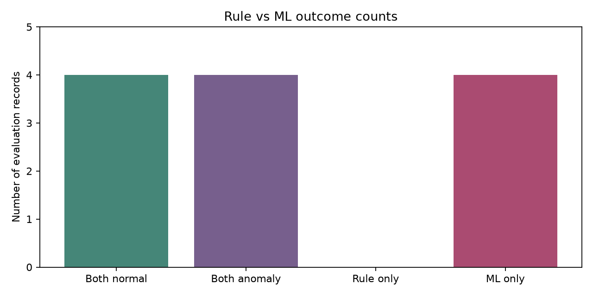

温湿度变化趋势

基于 CSV 宿舍环境记录自动生成
| 项目 | 平均值 | 最高值 | 最低值 |
|---|---|---|---|
| 温度 | 25.67℃ | 35.0℃ | 16.0℃ |
| 湿度 | 56.11% | 85.0% | 30.0% |
| 状态 | 次数 |
|---|---|
| 正常 | 2 |
| 偏冷 | 0 |
| 偏热 | 1 |
| 偏干 | 1 |
| 偏湿 | 1 |
| 偏冷偏干 | 1 |
| 偏冷偏湿 | 1 |
| 偏热偏干 | 1 |
| 偏热偏湿 | 1 |
| 时间 | 温度 | 湿度 | 状态 | 建议 |
|---|---|---|---|---|
| 2026-09-26 22:04:00 | 16.0 ℃ | 35.0 % | 偏冷偏干 | 当前环境温度较低且空气偏干，建议注意保暖，并适当增加空气湿度。 |
| 2026-09-26 22:04:07 | 16.0 ℃ | 80.0 % | 偏冷偏湿 | 当前环境低温高湿，可能产生阴冷感，建议加强保暖并保持通风。 |
| 2026-09-26 22:04:11 | 32.0 ℃ | 35.0 % | 偏热偏干 | 当前温度较高且空气偏干，建议适当降温，同时避免环境过度干燥。 |
| 2026-09-26 22:04:14 | 32.0 ℃ | 85.0 % | 偏热偏湿 | 当前环境高温高湿，容易产生闷热感，建议加强通风并降低湿度。 |
| 2026-09-26 22:04:22 | 25.0 ℃ | 30.0 % | 偏干 | 当前温度适宜，但空气偏干，建议适当增加环境湿度。 |
| 2026-09-26 22:04:27 | 25.0 ℃ | 80.0 % | 偏湿 | 当前温度适宜，但空气湿度较高，建议加强通风或进行除湿。 |
| 2026-09-26 22:04:38 | 35.0 ℃ | 50.0 % | 偏热 | 当前温度较高，湿度正常，建议保持空气流通并降低室内温度。 |

数据来源：独立 CSV：模拟历史样本 / 模拟待测样本；非真实传感器，未写入 CloudBase
固定规则按 DormMate 现有九状态范围判断；Isolation Forest 根据该节点训练历史的温湿度分布判断偏离程度。 ML 仅供辅助，不代表一定比固定规则正确。待判断新数据没有进入本次训练基线。
异常分数使用 Isolation Forest decision_function：小于 0 判为 ML 异常，数值越小表示越偏离训练分布。
dorm-a · 训练历史 40 条 · 待判断 12 条
Rule 异常 4 条 · ML 异常 8 条 · 共同异常 4 条 · 仅 Rule 0 条 · 仅 ML 4 条 · 共同正常 4 条
dorm-b · 训练历史 0 条 · 待判断 0 条
历史样本不足，暂不进行 ML 分析。
dorm-c · 训练历史 0 条 · 待判断 0 条
历史样本不足，暂不进行 ML 分析。


dorm-a 的 29.0℃ / 72%：Rule 正常，ML 异常。该节点训练历史只有 40 条，ML 对偏离常见模式的数值可能过于敏感；此判断值得复核，不能替代固定规则。
| 时间 | 节点 | 温度 | 湿度 | Rule 状态 | Rule 是否异常 | ML 是否异常 | 异常分数 | 一致性 |
|---|---|---|---|---|---|---|---|---|
| 2026-09-28T20:00:00.000Z | dorm-a | 24.5℃ | 58% | 正常 | 正常 | 正常 | 0.0192 | 一致 |
| 2026-09-28T20:30:00.000Z | dorm-a | 25.1℃ | 60% | 正常 | 正常 | 正常 | 0.0210 | 一致 |
| 2026-09-28T21:00:00.000Z | dorm-a | 29.0℃ | 72% | 正常 | 正常 | 异常 | -0.1303 | 不一致 |
| 2026-09-28T21:30:00.000Z | dorm-a | 32.0℃ | 85% | 偏热偏湿 | 异常 | 异常 | -0.1303 | 一致 |
| 2026-09-28T22:00:00.000Z | dorm-a | 16.0℃ | 35% | 偏冷偏干 | 异常 | 异常 | -0.1770 | 一致 |
| 2026-09-28T22:30:00.000Z | dorm-a | 25.0℃ | 54% | 正常 | 正常 | 正常 | 0.0089 | 一致 |
| 2026-09-28T23:00:00.000Z | dorm-a | 27.0℃ | 68% | 正常 | 正常 | 异常 | -0.1303 | 不一致 |
| 2026-09-28T23:30:00.000Z | dorm-a | 30.2℃ | 58% | 偏热 | 异常 | 异常 | -0.0732 | 一致 |
| 2026-09-29T00:00:00.000Z | dorm-a | 24.0℃ | 78% | 偏湿 | 异常 | 异常 | -0.0613 | 一致 |
| 2026-09-29T00:30:00.000Z | dorm-a | 23.8℃ | 55% | 正常 | 正常 | 正常 | 0.0100 | 一致 |
| 2026-09-29T01:00:00.000Z | dorm-a | 18.1℃ | 42% | 正常 | 正常 | 异常 | -0.1770 | 不一致 |
| 2026-09-29T01:30:00.000Z | dorm-a | 26.0℃ | 40% | 正常 | 正常 | 异常 | -0.0760 | 不一致 |